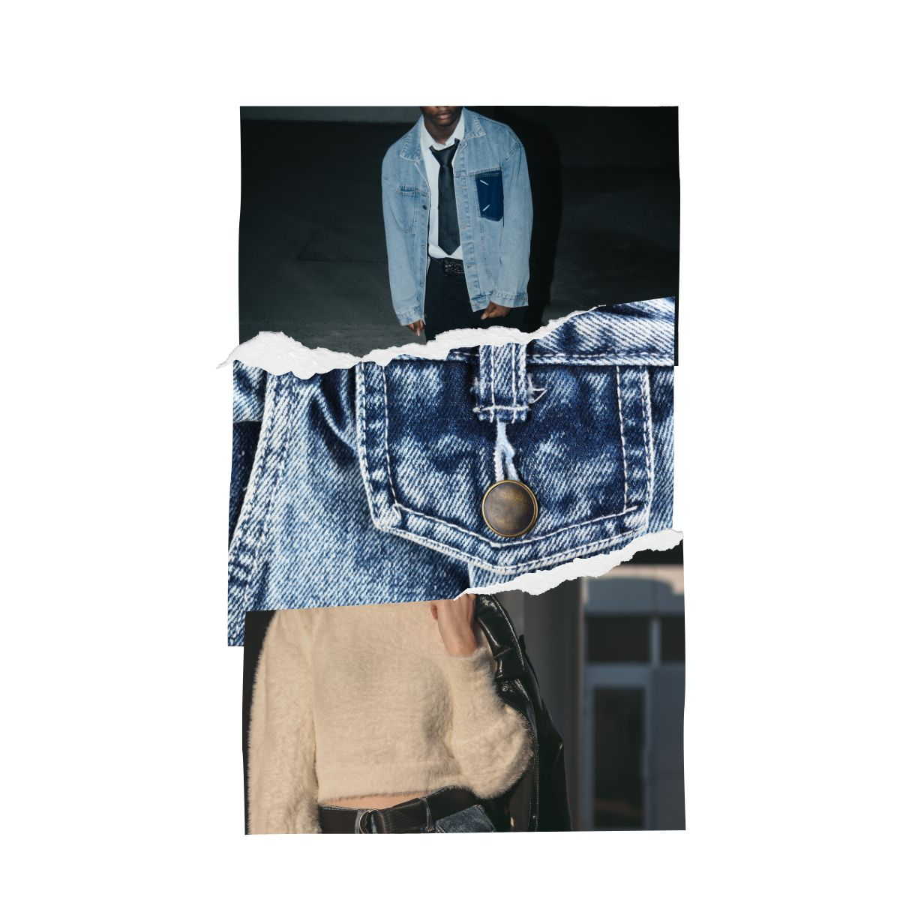
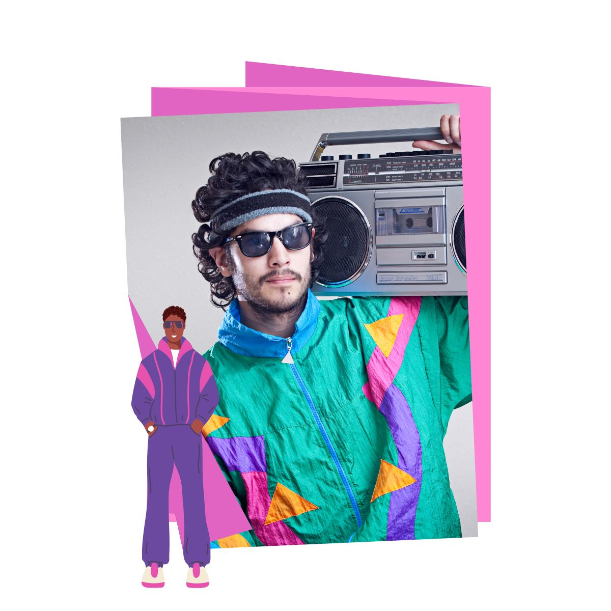

A moda dos anos 1990 foi marcada por um estilo mais casual e confortável, com destaque para calças jeans largas, camisetas básicas, camisas xadrez e tênis esportivos.
As cores neutras, as roupas largas e a influência do grunge, do hip-hop e da cultura pop refletiam a busca por autenticidade, praticidade e liberdade de expressão.

Os homens adotaram jeans folgados, camisetas estampadas, jaquetas jeans e bonés, enquanto o visual masculino era fortemente influenciado pelo rap, rock e pelo estilo urbano.
Em resumo, a moda dos anos 1990 representava uma era de simplicidade, conforto e diversidade, com tendências que misturavam diferentes estilos e valorizavam a personalidade de cada pessoa.
